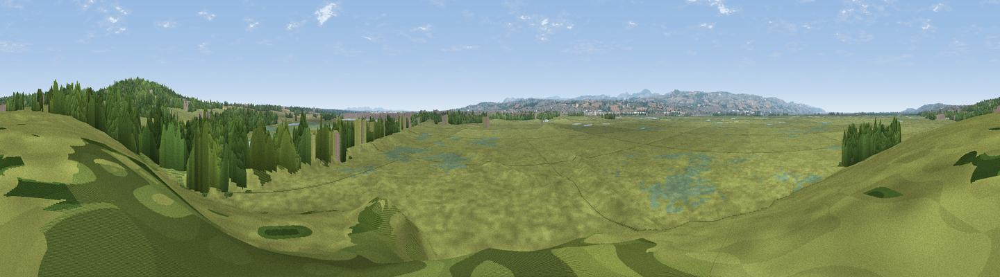

Burton Point
#34028 in England · top 83% of its area beats it · near BurtonWhere it is
The exact computed spot (SJ 30284 73624). Click the marker for map links.
The view, rendered

A 360° render of this exact spot computed from the terrain model, tree cover and land cover — summer colours, afternoon light, calibrated against photographs of famous viewpoints. Real trees, hedges and buildings will differ in detail.
The panorama
Grey silhouette: terrain skyline in each direction (720 bearings, Earth curvature and refraction included). Dashed green: skyline with trees (+15 m) and buildings (+8 m) as obstacles. Blue strip: how far the ground is visible on each bearing.
Where the view opens
Wedge length = distance to the farthest visible ground on that bearing (vegetation-aware). Rings at 10, 25 and 50 km.
What fills the view
75% grassland · 10% woodland · 9% wetland · 3% built-up · 2% cropland · 2% water
Angular shares of the visible panorama (visual magnitude), not map area. Landscape diversity 0.40 (0–1 Shannon).
Key numbers
More beautiful places nearby
The staircase of upgrades: each row has a higher view potential than everything closer. Driving times are estimates from straight-line distance, calibrated against real road routing — check an actual route before setting out.
| Place | Direction | Drive | Score |
|---|---|---|---|
| Viewpoint near Burton | NE · 1 km | ~4 min | 45.5 |
| Viewpoint near Ness | N · 2 km | ~4 min | 46.9 |
| Viewpoint near Gayton | NNW · 8 km | ~16 min | 65.1 |
| Thurstaston Hill | NNW · 12 km | ~23 min | 66.8 |
| Viewpoint near Caldy | NW · 14 km | ~26 min | 68.0 |
| Helsby Hill | E · 19 km | ~32 min | 74.6 |
| Beacon Hill | E · 22 km | ~36 min | 77.3 |
| Viewpoint near Harthill | SE · 28 km | ~44 min | 80.5 |
53.25503, -3.04644 · source: osm viewpoint · position refined by local search. Computed location — check access rights before visiting.